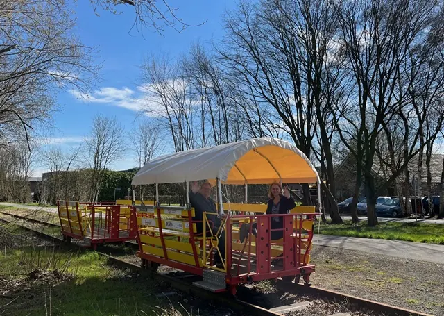

Nieuws ·
2024 seizoen van de Grenzland Draisine start op 23 maart!

Precies op tijd voor het begin van de paasvakantie in Duitsland start ook het seizoen van de Grenzland Draisine! Vanaf zaterdag 23 maart rollen de vrolijke fietstreinen weer dagelijks tot 31 oktober over de sporen tussen Groesbeek, Kranenburg en Kleve. Nieuw dit jaar zijn de daken, die speciaal voor de clubtreinen zijn gemaakt. Dit betekent dat gasten vanaf april beschermd tegen zowel zon als regen aan hun rit kunnen beginnen. Vanwege de algemene kostenstijging moesten de prijzen voor de fietstreinritten worden aangepast. De prijs voor een retourtje van maandag tot en met donderdag is nu €15 en €18
van vrijdag tot en met zondag en op feestdagen.
Grenzland Draisine / Fietsen op het spoor
Kinderen tot 14 jaar betalen de halve prijs. Senioren van 65 jaar en ouder krijgen echter nog steeds 50% korting op donderdag en op woensdag reist een kind gratis mee met het gezin! De populaire pakketten met wijnproeven, boerengolf, dierentuin of stadstours blijven ook aangeboden worden. Meer informatie is te vinden opwww.grenzland-draisine.eu, waar je ook direct kunt boeken. Het fietstreinteam is ook beschikbaar voor boekingen en advies op tel. 02826/9179900.